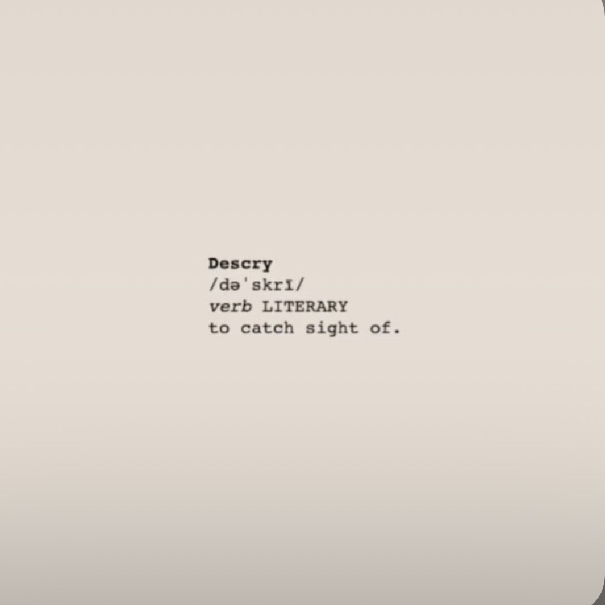

The Floridians


Stream Descry!


Bio
The Floridians are a South Florida–based indie-psychedelic band blending shimmering synths, driving bass, and sun-soaked guitar textures.
Known for their high-energy performances and lush, dream-pop sound, they’ve quickly become a standout in Florida’s indie scene.
Whether you’re on the dance floor or drifting through your headphones, The Floridians offer a sun-drenched, psychedelic ride.
Formed in 2021, they have climbed the proverbial ladder to have opened for legends like Jerry Harrison from The Talking Heads, as well as perform at music festivals such as Okeechobee Fest, iiiPoints and Same Same But Different.
They are currently working on their debut full length album due out in the winter of 2026.